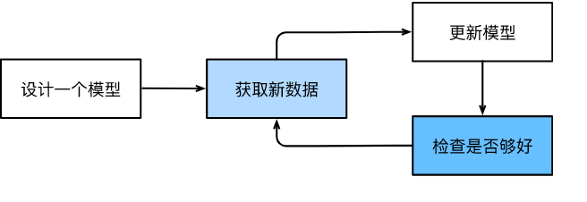
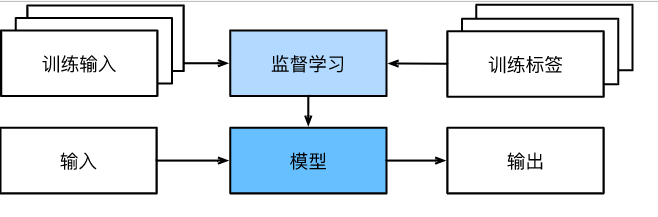
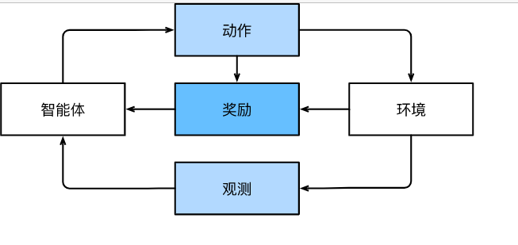

本博客记录阅读《动手学深度学习》的读书笔记。
日常生活中的机器学习
我们可以把参数看作旋钮，我们可以转动旋钮来调整程序的行为。
任一调整参数后的程序，我们称为模型（model）。
通过操作参数而生成的所有不同程序（输入-输出映射）的集合称为“模型族”。
使用数据集来选择参数的元程序被称为学习算法（learning algorithm）。
在我们开始用机器学习算法解决问题之前，我们必须精确地定义问题，确定输入（input）和输出（output）的性质，并选择合适的模型族。
在机器学习中，学习（learning）是一个训练模型的过程。 通过这个过程，我们可以发现正确的参数集，从而使模型强制执行所需的行为。 换句话说，我们用数据训练（train）我们的模型。
训练过程通常包含如下步骤：
- 从一个随机初始化参数的模型开始，这个模型基本毫不“智能”。
- 获取一些数据样本（例如，音频片段以及对应的{是,否}标签）。
- 调整参数，使模型在这些样本中表现得更好。
- 重复第2步和第3步，直到模型在任务中的表现令你满意。

关键组件
无论我们遇到什么类型的机器学习问题，这些组件都将伴随我们左右：
- 我们可以学习的数据（data）。
- 如何转换数据的模型（model）。
- 一个目标函数（objective function），用来量化模型的有效性。
- 调整模型参数以优化目标函数的算法（algorithm）。
数据
每个数据集由一个个样本（example, sample）组成，大多时候，它们遵循独立同分布(independently and identically distributed, i.i.d.)。 样本有时也叫做数据点（data point）或者数据实例（data instance），通常每个样本由一组称为特征（features，或协变量（covariates））的属性组成。 机器学习模型会根据这些属性进行预测。
标签：预测的一个特殊属性，例如是/否，猫/狗等。
当每个样本的特征类别数量都是相同的时候，其特征向量是固定长度的，这个长度被称为数据的维数（dimensionality）。 固定长度的特征向量是一个方便的属性，它有助于我们量化学习大量样本。
然而，并不是所有的数据都可以用“固定长度”的向量表示。例如不同的图片大小，文本长度。与传统机器学习方法相比，深度学习的一个主要优势是可以处理不同长度的数据。
模型
目标函数
在机器学习中，我们需要定义模型的优劣程度的度量，这个度量在大多数情况是“可优化”的，我们称之为目标函数（objective function）。 我们通常定义一个目标函数，并希望优化它到最低点。 因为越低越好，所以这些函数有时被称为损失函数（loss function，或cost function）。
当任务在试图预测数值时，最常见的损失函数是平方误差（squared error），即预测值与实际值之差的平方。 当试图解决分类问题时，最常见的目标函数是最小化错误率，即预测与实际情况不符的样本比例。 有些目标函数（如平方误差）很容易被优化，有些目标（如错误率）由于不可微性或其他复杂性难以直接优化。 在这些情况下，通常会优化替代目标。
在一个数据集上，我们通过最小化总损失来学习模型参数的最佳值。 该数据集由一些为训练而收集的样本组成，称为训练数据集（training dataset，或称为训练集（training set））。 然而，在训练数据上表现良好的模型，并不一定在“新数据集”上有同样的效能，这里的“新数据集”通常称为测试数据集（test dataset，或称为测试集（test set））。
综上所述，我们通常将可用数据集分成两部分：训练数据集用于拟合模型参数，测试数据集用于评估拟合的模型。 然后我们观察模型在这两部分数据集的效能。 你可以把“一个模型在训练数据集上的效能”想象成“一个学生在模拟考试中的分数”。 这个分数用来为一些真正的期末考试做参考，即使成绩令人鼓舞，也不能保证期末考试成功。 换言之，测试性能可能会显著偏离训练性能。 当一个模型在训练集上表现良好，但不能推广到测试集时，我们说这个模型是“过拟合”（overfitting）的。
优化算法
一旦我们获得了一些数据源及其表示、一个模型和一个合适的损失函数，我们接下来就需要一种算法，它能够搜索出最佳参数，以最小化损失函数。 深度学习中，大多流行的优化算法通常基于一种基本方法–梯度下降（gradient descent）。 简而言之，在每个步骤中，梯度下降法都会检查每个参数，看看如果你仅对该参数进行少量变动，训练集损失会朝哪个方向移动。 然后，它在可以减少损失的方向上优化参数。
各种机器学习问题
监督学习
监督学习（supervised learning）擅长在“给定输入特征”的情况下预测标签。
监督学习举例：根据计算机断层扫描（CT）肿瘤图像，预测是否为癌症；根据本月的财务报告数据，预测下个月股票的价格。
在工业中，大部分机器学习的成功应用都是监督学习。 这是因为在一定程度上，许多重要的任务可以清晰地描述为：在给定一组特定的可用数据的情况下，估计未知事物的概率。

回归
回归（regression）是最简单的监督学习任务之一。
当标签取任意数值时，我们称之为回归问题。 我们的目标是生成一个模型，它的预测非常接近实际标签值。
回归问题举例：预测房价；预测用户对一部电影的评分。
分类
二分类，多分类。
分类可能变得比二元分类、多元分类复杂得多。 例如，有一些分类任务的变体可以用于寻找层次结构，层次结构假定在许多类之间存在某种关系。因此，并不是所有的错误都是均等的。 我们宁愿错误地分入一个相关的类别，也不愿错误地分入一个遥远的类别，这通常被称为层次分类(hierarchical classification)。
标记问题
学习预测不相互排斥的类别的问题称为多标签分类（multi-label classification）。
举个例子，人们在技术博客上贴的标签，比如“机器学习”、“技术”、“小工具”、“编程语言”、“Linux”、“云计算”。 一篇典型的文章可能会用5-10个标签，因为这些概念是相互关联的。
搜索
在信息检索领域，我们希望对一组项目进行排序。 以网络搜索为例，我们的目标不是简单的“查询（query）-网页（page）”分类，而是在海量搜索结果中找到用户最需要的那部分。
推荐系统
序列学习
有些时候，输入是连续的。我们的模型可能就需要拥有“记忆”功能。
比如文字序列，图像序列（视频）
以下是序列学习的特殊情况：
- 标记和解析
- 语音识别
- 文本到语音
- 机器翻译
无监督学习
比如，你的老板可能会给你一大堆数据，然后让你用它做一些数据科学研究，却没有对结果有要求。 我们称这类数据中不含有“目标”的机器学习问题为无监督学习（unsupervised learning）
以下列举了集中无监督学习：
- 聚类（clustering）问题：没有标签的情况下，我们是否能给数据分类
- 主成分分析（principal component analysis）问题：我们能否找到少量的参数来准确地捕捉数据的线性相关属性？比如，一个球的运动轨迹可以用球的速度、直径和质量来描述。
- 因果关系（causality）和概率图模型（probabilistic graphical models）问题：我们能否描述观察到的许多数据的根本原因？
- 生成对抗性网络（generative adversarial networks）：为我们提供一种合成数据的方法，甚至像图像和音频这样复杂的结构化数据。
与环境互动
到目前为止，不管是监督学习还是无监督学习，我们都会预先获取大量数据，然后启动模型，不再与环境交互。 这里所有学习都是在算法与环境断开后进行的，被称为离线学习（offline learning）。
这种简单的离线学习有它的魅力。 好的一面是，我们可以孤立地进行模式识别，而不必分心于其他问题。 但缺点是，解决的问题相当有限。 与预测不同，“与真实环境互动”实际上会影响环境。 这里的人工智能是“智能代理”，而不仅是“预测模型”。 因此，我们必须考虑到它的行为可能会影响未来的观察结果。
考虑“与真实环境互动”将打开一整套新的建模问题。以下只是几个例子：
- 环境还记得我们以前做过什么吗？
- 环境是否有助于我们建模？例如，用户将文本读入语音识别器。
- 环境是否想要打败模型？例如，一个对抗性的设置，如垃圾邮件过滤或玩游戏？
- 环境是否重要？
- 环境是否变化？例如，未来的数据是否总是与过去相似，还是随着时间的推移会发生变化？是自然变化还是响应我们的自动化工具而发生变化？
当训练和测试数据不同时，最后一个问题提出了分布偏移（distribution shift）的问题。 接下来，我们将简要描述强化学习问题，这是一类明确考虑与环境交互的问题。
强化学习
不是太懂
在强化学习问题中，agent在一系列的时间步骤上与环境交互。 在每个特定时间点，agent从环境接收一些观察（observation），并且必须选择一个动作（action），然后通过某种机制（有时称为执行器）将其传输回环境，最后agent从环境中获得奖励（reward）。 此后新一轮循环开始，agent接收后续观察，并选择后续操作，依此类推。

强化学习框架的通用性十分强大。 例如，我们可以将任何监督学习问题转化为强化学习问题。
当然，强化学习还可以解决许多监督学习无法解决的问题。 例如，在监督学习中，我们总是希望输入与正确的标签相关联。 但在强化学习中，我们并不假设环境告诉agent每个观测的最优动作。 一般来说，agent只是得到一些奖励。 此外，环境甚至可能不会告诉我们是哪些行为导致了奖励。
强化学习可能还必须处理部分可观测性问题。 也就是说，当前的观察结果可能无法阐述有关当前状态的所有信息。 比方说，一个清洁机器人发现自己被困在一个许多相同的壁橱的房子里。 推断机器人的精确位置（从而推断其状态），需要在进入壁橱之前考虑它之前的观察结果。
最后，在任何时间点上，强化学习agent可能知道一个好的策略，但可能有许多更好的策略从未尝试过的。 强化学习agent必须不断地做出选择：是应该利用当前最好的策略，还是探索新的策略空间（放弃一些短期回报来换取知识）。
一般的强化学习问题是一个非常普遍的问题。 agent的动作会影响后续的观察，而奖励只与所选的动作相对应。 环境可以是完整观察到的，也可以是部分观察到的，解释所有这些复杂性可能会对研究人员要求太高。 此外，并不是每个实际问题都表现出所有这些复杂性。